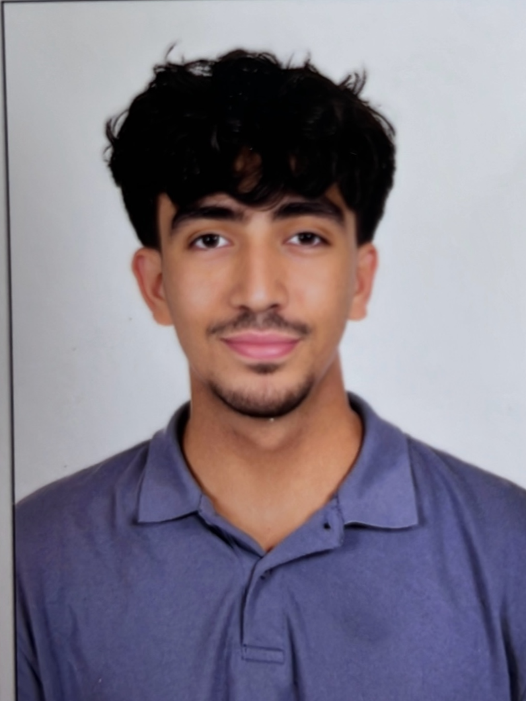

Supermarket Data Analysis
Python · Data analysis
Data cleaning and analysis with Pandas, using a supermarket dataset in a Jupyter notebook.
PythonPandasJupyter
View repository Data · Cloud · Backend
I build practical systems that turn raw data into clear, usable information.

I’m Moaaz, a developer focused on data engineering, backend systems, and cloud infrastructure. I work with Python, SQL, and C to organize information, automate processing, and build useful software.
My approach is straightforward: understand the problem, build a clear solution, and keep the code maintainable. Explore my projects below to see how I put that into practice.
Python · SQL · Pandas
Cleaning datasets, transforming raw records, and exploring data to make it easier to use.
Python · C · Git · Docker
Structured applications with clear workflows for managing records and processing transactions.
AWS · Networking · Storage
Configuring cloud resources, networks, and storage with attention to organization and access.
Python · Data analysis
Data cleaning and analysis with Pandas, using a supermarket dataset in a Jupyter notebook.
Python · Application development
Python management systems that model library and hospital workflows. Explore the implementation and application logic in the repository.
C · Systems programming
A banking application covering account management, transactions, and file-based data storage. This repository is a fork of the shared bank-system project.